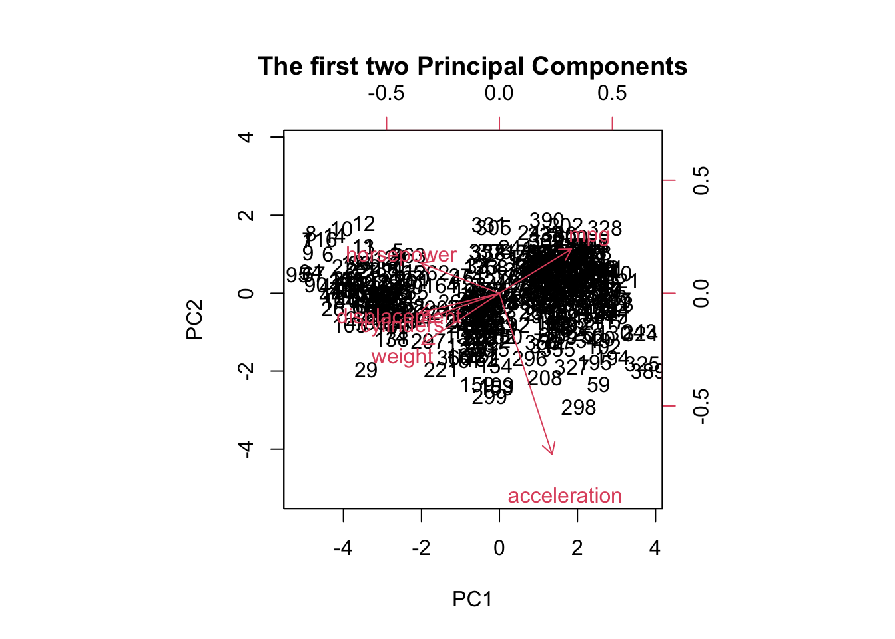

lasso.pred <-predict(R2, s=bestlam, newx=x[test,]) mean((lasso.pred-y[test])^2) # obtain the MSE from the test set
[1] 11058.49
# Answer: Best lambda = 1.655014, Test MSE = 11042.16
(c)
library(randomForest)set.seed(6677)train <-sample(nrow(df), 330)df_train <- df[train,]df_test <- df[-train,]R3 <-randomForest(Balance~.,data=df,subset=train, mtry=7, importance=TRUE) #using bagging with training datayhat.bag <-predict(R3, newdata=df_test)mean((yhat.bag-df_test[,"Balance"])^2)
[1] 8598.558
# Answer: Test MSE: 8598.558
(d)
library(randomForest)set.seed(6677)train <-sample(nrow(df), 330)df_train <- df[train,]df_test <- df[-train,]R4 <-randomForest(Balance~.,data=df,subset=train, mtry=3, importance=TRUE) #using bagging with training datayhat.bag <-predict(R4, newdata=df_test)mean((yhat.bag-df_test[,"Balance"])^2)
[1] 11909.35
# Answer: Test MSE: 11909.35
(e)
library(randomForest)set.seed(6677)final_model <-randomForest(Balance~.,data=df,mtry=7, importance=TRUE) #using bagging with training datafinal_model
Call:
randomForest(formula = Balance ~ ., data = df, mtry = 7, importance = TRUE)
Type of random forest: regression
Number of trees: 500
No. of variables tried at each split: 7
Mean of squared residuals: 8364.42
% Var explained: 96.03
# Answer: I would choose the bagging model in part (c) as it has the lowest test MSE
(f)
df_5obs = df[1:5,]df_5obs
Income Limit Rating Own Student Married Region Balance
1 14.891 3606 283 No No Yes South 333
2 106.025 6645 483 Yes Yes No West 903
3 104.593 7075 514 No No Yes West 580
4 148.924 9504 681 Yes No No West 964
5 55.882 4897 357 No No Yes South 331
# Answer: First principal component for each of the 5 observation: -2.34267393, -0.65362068, 1.83002396, 0.06824995, 1.09802070# Second principal component for each of the 5 observation: -0.8709509, 1.5237422, 0.1363334, 0.4150659, -1.2041906
(b)
# Using pcobpcob <-prcomp(M, scale=TRUE) # use R function prcomp, with scaling# Use scaling when the features are very differentpcob$x
biplot(pr.out, scale =0, main ="The first two Principal Components")

(d)
# Answer: Loading value for variable, cylinders on PC1 is -0.4306152# Loading value for variable, cylinders on PC2 is -0.1483141
(e)
# Cylinders and displacement are highly correlated as they are going in the same direction
(f)
# The 27th observation has an approximate first principal component score of -3.8 and an approximate second principal component score of -0.8
(g)
plot(pve, xlab ="Principal Component", ylab ="Proportion of Variance Explained", ylim =c(0, 1), type ="b")
(h)
# Calculate and print the proportion of variance explained by each principal componentpr.var <- pr.out$sdev^2pve <- pr.var/sum(pr.var)Information_loss =sum(pve[3:length(pve)])Information_loss